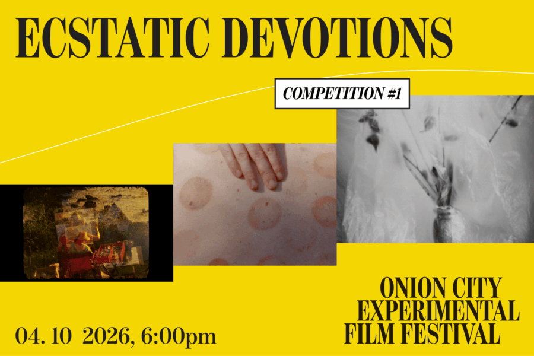

Onion City:
ECSTATIC DEVOTIONS are rites, relics, and remains. The program comprises acts that corrupt the surface, acts of transmutation and metamorphosis, and gestures burned into the body’s muscle memory—movements of a spiritual spiral.
Lineup:
XTENDED RELEASE (version 2.5) | Joshua Gen Solondz | US | 2026 | 16 min | Chicago Festival Premiere
Practice Towards Light | Jonathan Seungjoon Lee | South Korea | 2025 | 13 min | US Festival Premiere
All of This Must Be Paid For | Gabi Rudin | US | 2025 | 13 min nearer to thee in a triptych | Matt Whitman | US | 2025 | 9 min | Chicago Festival Premiere
The Gloaming | Charlotte Pryce | US/UK | 2025 | 14 min | Chicago Festival Premiere